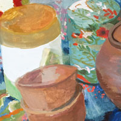
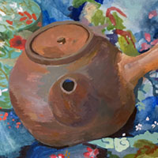

Japan Inspired.

I created the watercolors on this page while living in Arashiyama, Kyoto.

I love painting food and colorful things too.

Watercolors bring joy and happiness to all who see them.

I hope that seeing my paintings can help bring color to your life.
"Cultivate an ever continuous power of observation. Wherever you are, be always ready to make slight notes of postures, groups and incidents. Store up in the mind... a continuous stream of observations from which to make selections later. Above all things get abroad, see the sunlight and everything that is to be seen. " -John Singer Sargent